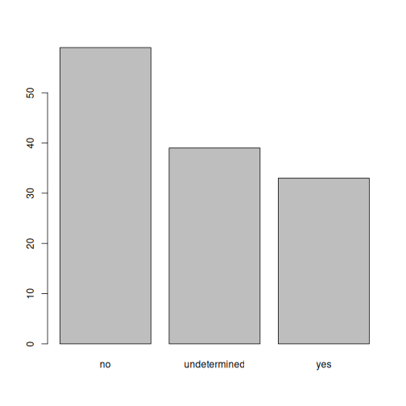

Өгөгдлөөс эхэлнэ
Last updated on 2026-03-18 | Edit this page
Overview
Questions
-
Rөгөгдөл хэрхэн хадгалдаг вэ? - Data.frame гэж юу вэ?
- Би
.csvфайлыг хэрхэн бүтнээр ньRруу унших вэ? - Би өөрийн өгөгдлийн багцын талаарх үндсэн хураангуй мэдээллийг хэрхэн авах вэ?
-
Rнь миний датасет дахь мөрүүдийг хэрхэн яаж өөрчлөх вэ? - Яагаад би утсанд өөрөөр хандахыг хүсч байна вэ?
-
R-д огноог хэрхэн харуулсан бэ, би форматыг хэрхэн өөрчлөх вэ?
Objectives
-
.csvфайлаас гадаад өгөгдлийг өгөгдлийн хүрээ рүү ачаална уу. - Data.frames-ийн бүтэц, агуулгыг судлах
-
Rнь объектуудад хэрхэн утгыг оноож байгааг ойлгоорой - Векторын төрлүүд болон дутуу өгөгдлийг ойлгох
- Хүчин зүйл ба мөр хоорондын ялгааг тайлбарла.
- Хүчин зүйлүүдийг үүсгэх, хөрвүүлэх
- Огнооны форматыг шалгаж, өөрчлөх.
Хүлээн зөвшөөрөлт
Энэхүү семинарыг Дата мужааны хичээлүүдийн материалыг ашиглан
тохируулсан R for Social Scientists,
ялангуяа lesson 02-starting-with-data,
болон R for Ecologists,
тусгайлан how-r-thinks-about-data.
Бусад материал
Тохируулах
[previous workshop]-д үүсгэсэн
RStudio project-аа нээгээд эхэл (https://irim-mongolia.github.io/irim-r-workshops/introduction-r-rstudio.html#getting-set-up-in-rstudio)
(intro_r гэж нэрлэдэг). Шинэ R Notebook нээнэ
үү: Click File -> New File -> R Тэмдэглэлийн дэвтэр.
R Notebook гэх мэт утга учиртай файлын нэрээр хадгална уу
starting_with_data.Rmd, scripts фолдерт.
Та шинэ R Notebook-г нээхэд зарим тайлбар текст гарч
ирнэ. Энэ устгаж болох тул та өөрийн текст болон кодыг оруулах
боломжтой.
Өгөгдлийн хүрээ гэж юу вэ?
Өгөгдлийн хүрээ нь R дахь хүснэгтэн өгөгдлийн де
факто өгөгдлийн бүтэц юм. мөн өгөгдөл боловсруулах, статистик,
график зурахад бидний ашигладаг зүйл.
Өгөгдлийн хүрээ нь хүснэгтийн формат дахь өгөгдлийг дүрслэх явдал юм
Энд баганууд нь бүгд ижил урттай векторууд юм. Өгөгдлийн хүрээ зэрэг
программуудад илүү танил болсон хүснэгттэй адил юм Excel,
нэг гол ялгаа. Баганууд нь вектор учраас багана бүр нэг төрлийн өгөгдөл
агуулсан байх ёстой (жишээ нь, тэмдэгт, бүхэл тоо, хүчин зүйлс).
Жишээлбэл, өгөгдлийн хүрээг дүрсэлсэн зураг энд байна тоо, тэмдэгт,
логик вектороос бүрдэнэ.

Өгөгдлийн хүрээг гараар үүсгэж болох боловч ихэнхдээ тэдгээрийг
үүсгэдэг read_csv() эсвэл read_table()
функцээр; өөрөөр хэлбэл хэзээ хатуу дискнээс (эсвэл вэбээс) хүснэгт
импортлох. Бид одоо болно read_csv() ашиглан хүснэгтэн
өгөгдлийг хэрхэн импортлохыг харуулах.
SAFI мэдээллийн танилцуулга
SAFI (Африкийн фермерээр удирдуулсан усжуулалтыг судлах)
нь дараах судалгаа юм. Танзани, Мозамбик дахь газар тариалан, усалгааны
аргууд. Судалгаа мэдээллийг 2016 оны 11-р сарын хооронд хийсэн
ярилцлагаар цуглуулсан болон 2017 оны 6-р сар. Энэ хичээлд бид дэд
багцыг ашиглах болно боломжтой өгөгдөл. Анхны өгөгдлийн багцын талаарх
мэдээллийг үзнэ үү dataset description.
Бид өгсөн өгөгдлийн багцын дэд багцыг ашиглах болно
(data/raw/SAFI_clean.csv). Энэ өгөгдлийн багцад дутуу
өгөгдөл байна NULL гэж кодлогдсон, мөр бүр нь нэг
ярилцлагад зориулсан мэдээллийг агуулна Хариуцагч ба баганууд нь:
| column_name | description |
|---|---|
| key_id | Added to provide a unique Id for each observation. (The InstanceID field does this as well but it is not as convenient to use) |
| village | Village name |
| interview_date | Date of interview |
| no_membrs | How many members in the household? |
| years_liv | How many years have you been living in this village or neighboring village? |
| respondent_wall_type | What type of walls does their house have (from list) |
| rooms | How many rooms in the main house are used for sleeping? |
| memb_assoc | Are you a member of an irrigation association? |
| affect_conflicts | Have you been affected by conflicts with other irrigators in the area? |
| liv_count | Number of livestock owned. |
| items_owned | Which of the following items are owned by the household? (list) |
| no_meals | How many meals do people in your household normally eat in a day? |
| months_lack_food | Indicate which months, In the last 12 months have you faced a situation when you did not have enough food to feed the household? |
| instanceID | Unique identifier for the form data submission |
Өгөгдлийг татаж авах
Хэрэв та өмнө нь SAFI_clean.csv датасетийг татаж аваагүй
бол previous workshop,
доорх зааврыг дагаж татаж авна уу. Хэрэв танд байгаа бол
data/raw/ фолдерт байгаа файлыг Өгөгдөл
импортлох руу очно уу. хэсэг.
Бид SAFI_clean.csv нэртэй өгөгдлийн багцыг ашиглах
болно. Шууд татаж авах Энэ файлын холбоос нь: https://github.com/datacarpentry/r-socialsci/blob/main/episodes/data/SAFI_clean.csv.
Энэ өгөгдөл нь SAFI судалгааны үр дүнгийн бага зэрэг цэвэршүүлсэн
хувилбар юм дээр боломжтой figshare.
Эхлээд бид үүнийг хадгалахын тулд data нэртэй шинэ
хавтас үүсгэх хэрэгтэй өгөгдлийн багц. Файлын хэсэг рүү очоод
data нэртэй шинэ хавтас үүсгэнэ үү cleaned
болон raw гэж нэрлэгддэг хоёр дэд хавтас.
intro_r
│
└── scripts
│
└── data
│ └── cleaned
│ └── raw
│
└─── images
│
└─── documentsТа үүнд ашигласан SAFI_clean.csv датасетийг татаж авах
боломжтой GitHub холбоосоос эсвэл R-тэй
семинар. Та файлыг эндээс татаж авах боломжтой энэ GitHub link
мөн үүнийг data/raw лавлахдаа SAFI_clean.csv
болгон хадгална уу үүсгэсэн. Эсвэл үүнийг хуулж буулгах замаар
R-с шууд хийж болно таны консол дээр:
download.file( "https://raw.githubusercontent.com/datacarpentry/r-socialsci/main/episodes/data/SAFI_clean.csv", "data/raw/SAFI_clean.csv", mode = "wb" )
Өгөгдөл импортлож байна
Та функцийг ашиглан R-н санах ойд өгөгдлийг ачаалах гэж
байна -ийн нэг хэсэг болох readr багцаас
read_csv() ОРОН БАЙГУУЛАГЧ0; -ийн
tidyverse цуглуулгын талаар илүү ихийг
мэдэж аваарай багцууд here.
readr-г суулгасан
tidyverse суулгацын нэг хэсэг болгон. Та
ачаалах үед tidyverse
(library(tidyverse)), үндсэн багцууд (багцууд ихэнх
өгөгдлийн шинжилгээнд ашигладаг) readr-г
оруулаад ачаалагдана.
Гэхдээ үргэлжлүүлэхээсээ өмнө энэ нь ярих сайхан боломж юм
зөрчилдөөн. Бидний ачаалж буй зарим багцууд нь функцийг нэвтрүүлж болно
урьдчилан ачаалагдсан R багцад аль хэдийн ашиглагдаж байгаа
нэрс. Тухайлбал, Бид доорх tidyverse багцыг ачаалах үед бид хоёрыг
танилцуулах болно зөрчилтэй функцууд: filter() болон
lag(). Учир нь ийм зүйл тохиолддог filter
болон lag нь статистикийн багцад аль хэдийн ашиглагдсан
функцууд юм (R-д аль хэдийн урьдчилан ачаалагдсан). Одоо юу
болох вэ гэвэл бид, төлөө Жишээ нь, filter() функцийг
дуудах, R dplyr::filter()-г ашиглах болно
stats::filter() хувилбар биш. Учир нь ийм зүйл тохиолддог
зөрчилтэй, анхдагчаар R нь хамгийн сүүлд ачаалагдсан
функцийг ашигладаг багц. Зөрчилтэй функцууд нь ирээдүйд танд асуудал
үүсгэж болзошгүй. Тиймээс бид тэдгээрийг зөв мэддэг байх нь чухал юм
Хэрэв бид хүсвэл тэдгээрийг зохицуул.
Үүнийг хийхийн тулд бидэнд зөрчилдөөнтэй дараах функцүүд хэрэгтэй багц:
-
conflicted::conflict_scout(): Бидэнд зөрчилтэй функцуудыг харуулна. -
conflict_prefer("function", "package_prefered"): Бидэнд зөвшөөрнө одооноос бидний хүссэн үндсэн функцийг сонго.
Бид хүссэн үедээ залгаж болно гэдгийг мэдэх нь чухал юм
stats::filter() гэх мэт бидний хүссэн багцаас шууд
функц.
RStudio төслийг ашигласан ч сурахад хэцүү байж болно
файлын байршилд хүрэх замыг хэрхэн зааж өгөх.
here багцыг оруулна уу! The энд багц нь
дээд түвшний лавлахтай (таны RStudio төсөл). Эдгээр харьцангуй замууд нь
хаана байгаагаас үл хамааран ажилладаг холбогдох эх файл нь шинжилгээний
төслүүд гэх мэт таны төсөл дотор амьдардаг өөр өөр дэд лавлах дахь
өгөгдөл, тайлантай. Энэ бол чухал зүйл setwd()-ийг
ашиглахаас ялгаатай нь таны захиалах аргаас хамаарна таны компьютер
дээрх файлууд.
read_csv() болон here() функцийг ашиглахын
өмнө бид үүнийг хийх хэрэгтэй tidyverse болон
here багцуудыг ачаална уу.
Тэмдэглэлийн дэвтэртээ шинэ кодын хэсэг нэмж, tidyverse
болон here-г ачаална уу багц болон SAFI
өгөгдлийн багцаас уншина уу. Бид өгөгдлийн багцыг
тохируулна interviews нэртэй объект.
Хэрэв та санаж байгаа бол дутуу өгөгдлийг өгөгдлийн багцад
NULL гэж кодлосон болно. Бид үүнийг read_csv()
функцэд хэлэх тул R автоматаар хэлэх болно өгөгдлийн багц
дахь бүх NULL оруулгыг NA болгон
хөрвүүлэх.
R
library(tidyverse)
library(here)
interviews <- read_csv(
here("data", "raw", "SAFI_clean.csv"),
na = "NULL")
Дээрх кодонд here() функц хавтас болон файлыг авч
байгааг бид анзаарсан нэрсийг оролт болгон (жишээ нь:
"data", "SAFI_clean.csv") дотор хавсаргасан
ишлэл ("") ба таслалаар тусгаарлагдсан. here()
нь хүлээн авах болно тодорхой файл руу шилжихэд шаардлагатай олон нэрс
(жишээ нь, here("data", "raw", "SAFI_clean.csv)).
here() функц нь хавтас болон файлын нэрийг хүлээн авах
боломжтой өөр форматтай, таслалаас илүү налуу зураас (“/”) ашиглан
тусгаарлана нэрс. Хоёр арга нь тэнцүү, тиймээс
here("data", "raw", "SAFI_clean.csv") болон
here("data/raw/SAFI_clean.csv") ижил үр дүнг гаргана.
(Налуу зураасыг бүх үйлдлийн системд ашигладаг; урвуу зураасыг
ашигладаггүй.)
Объектуудыг хуваарилах
R-д бид нэрлэсэн объект-д оролт
өгөх боломжтой. Бид үүнийг ашиглан хийдэг даалгаврын
сум <-, Alt+- (Windows)
эсвэл Сонголт+- (Mac). Бидний энд хийж байгаа
зүйл бол дараах үр дүнг авч байна. сумны баруун талд байгаа код (csv
файлыг унших), ба сумны зүүн талд нэр нь байгаа объектод оноож байна
(interviews).
Ярилцлагын өгөгдлийн хүрээ тийм биш байгааг та анзаарч магадгүй кодын
нүдний доор харуулна. Учир нь даалгавар (<-) байхгүй юу
ч харуулах. Хэрэв бид өгөгдөл ачаалагдсан эсэхийг шалгахыг хүсвэл бид
өгөгдлийн хүрээний агуулгыг түүний нэрийг бичээд харах боломжтой:
interviews шинэ кодын хэсэг болгон.
R
interviews
## Try also
## view(interviews)
## head(interviews)
OUTPUT
# A tibble: 131 × 14
key_ID village interview_date no_membrs years_liv respondent_wall_type
<dbl> <chr> <dttm> <dbl> <dbl> <chr>
1 1 God 2016-11-17 00:00:00 3 4 muddaub
2 2 God 2016-11-17 00:00:00 7 9 muddaub
3 3 God 2016-11-17 00:00:00 10 15 burntbricks
4 4 God 2016-11-17 00:00:00 7 6 burntbricks
5 5 God 2016-11-17 00:00:00 7 40 burntbricks
6 6 God 2016-11-17 00:00:00 3 3 muddaub
7 7 God 2016-11-17 00:00:00 6 38 muddaub
8 8 Chirodzo 2016-11-16 00:00:00 12 70 burntbricks
9 9 Chirodzo 2016-11-16 00:00:00 8 6 burntbricks
10 10 Chirodzo 2016-12-16 00:00:00 12 23 burntbricks
# ℹ 121 more rows
# ℹ 8 more variables: rooms <dbl>, memb_assoc <chr>, affect_conflicts <chr>,
# liv_count <dbl>, items_owned <chr>, no_meals <dbl>, months_lack_food <chr>,
# instanceID <chr>Өгөгдлийн хүрээг судлах
Шинэ функцийн гаралттай ажиллахдаа энэ нь ихэвчлэн сайн санаа юм
class()-г шалгахын тулд:
R
class(interviews)
OUTPUT
[1] "spec_tbl_df" "tbl_df" "tbl" "data.frame" Өө! Энэ юу вэ? Энэ нь олон ангитай spec_tbl_df,
tbl_df, tbl, data.frame? За,
үүнийг tibble гэж нэрлэдэг бөгөөд энэ нь нь data.frame-ийн
tidyverse хувилбар юм. Энэ нь * data.frame, гэхдээ зарим
нэмэлт хөнгөлөлтүүдтэй. Энэ нь арай илүү сайхан хэвлэдэг, энэ нь онцлон
тэмдэглэдэг NA утгууд ба сөрөг утгууд нь улаан өнгөтэй байх
ба энэ нь ерөнхийдөө болно тантай илүү их харилцах (анхаарал, алдааны
хувьд, энэ нь a сайн зүйл).
tibble-ын хувьд багана тус бүрт орсон өгөгдлийн төрлийг
a-д жагсаасан болно баганын нэрсийн доор товчилсон загвар. Жишээлбэл,
энд key_ID нь хөвөгч цэгийн тоонуудын багана (үгний хувьд
<dbl> гэж товчилсон ‘давхар’),
respondent_wall_type нь тэмдэгтүүдийн багана (
<chr>), interview_date нь “огноо ба цаг”
форматтай багана (<dttm>).
tidyverse ба base R
Бид tidyverse-ийн талаар илүү гүнзгий нэвтэрч эхлэхийн
тулд товчхон хэлэх хэрэгтэй tidyverse багц дээр анхаарлаа
төвлөрүүлэх зарим шалтгааныг дурдахын тулд түр зогсоо багаж хэрэгслийн.
R-д ажил хийх олон арга зам байдаг бөгөөд тэнд -тэй төстэй ажлуудыг
гүйцэтгэж чадах бусад аргууд юм tidyverse.
base R хэллэгийг ашигладаг хандлагыг
илэрхийлэхэд ашигладаг R-н өгөгдмөл багцуудад агуулагдсан
функцууд. Бид base R ашиглах болно str(),
head(), nrow() зэрэг функцуудыг ашиглах бөгөөд
бид ашиглах болно. энэ семинарт илүү тараагдсан. Гэсэн хэдий ч зарим
түлхүүрүүд байдаг base R арга барилыг бид заахгүй. Үүнд
дөрвөлжин хаалт орно дэд тохиргоо. Та бусад хүмүүсийн бичсэн кодтой
таарч магадгүй юм base R тушаал болох
interviews[1:10, 2] гэх мэт. Хэрэв та Эдгээр аргуудын
талаар илүү ихийг мэдэхийг хүсвэл та шалгаж болно Software Carpentry Programming with R
зэрэг Мужааны бусад хичээлүүд.
tidyverse багц багцыг хуваалцдаг тул бид тэдэнд заахаар
сонгосон ижил төстэй синтакс ба философи нь тэдгээрийг тууштай, үр
дүнтэй болгодог уншихад хялбар код. Тэд бас маш уян хатан, хүчирхэг
бөгөөд a ижил төстэй зарчмын дагуу хийгдсэн багцын тоо өссөөр байна
бусад багцуудтай сайн ажиллах. tidyverse багцууд Тэд маш
тодорхой баримт бичигтэй, өргөн хүрээтэй суралцах хандлагатай байдаг
шинэхэн хэрэглэгчдэд зориулж бичих хандлагатай материалууд. Эцэст нь,
tidyverse улам л өссөөр байгаа бөгөөд хүчтэй дэмжлэгтэй
байна RStudio, энэ нь эдгээр аргууд нь тухайн салбарт
хамааралтай болно гэсэн үг юм ирээдүй.
Анхаарна уу
read_csv() талбаруудыг таслалаар тусгаарласан гэж үздэг.
Гэсэн хэдий ч, онд хэд хэдэн оронд таслалыг аравтын бутархай болгон
ашигладаг цэг таслал (;)-ийг талбарын зааглагч болгон ашигладаг. Хэрэв
та үүнийг уншихыг хүсвэл R доторх файлын төрлийг та
read_csv2 функцийг ашиглаж болно. Энэ нь биеэ авч явдаг яг
read_csv шиг боловч аравтын бутархайн хувьд өөр параметр
ашигладаг болон талбайн тусгаарлагч. Хэрэв та өөр форматтай ажиллаж
байгаа бол тэд Хэрэглэгч хоёуланг нь зааж өгч болно.
read_csv()-н тусламжийг шалгана уу Илүү ихийг мэдэхийн тулд
?read_csv гэж бичнэ үү. Мөн read_tsv() байна
табаар тусгаарлагдсан өгөгдлийн файлууд ба read_delim() нь
танд илүү ихийг зааж өгөх боломжийг олгоно таны файлын бүтцийн талаарх
дэлгэрэнгүй мэдээлэл.
Өгөгдлийн хүрээг шалгаж байна
tbl_df объектыг дуудах үед (interviews гэх
мэт) аль хэдийн байна гэх мэт бидний өгөгдлийн хүрээний талаарх олон
мэдээлэл мөрийн тоо, баганын тоо, баганын нэр, гэх мэт Бид дөнгөж сая
багана бүрт хадгалагдсан өгөгдлийн ангиллыг харлаа. Гэсэн хэдий ч байдаг
өгөгдлийн хүрээнээс энэ мэдээллийг гаргаж авах функцууд. Энд а эдгээр
функцүүдийн заримын бүрэн бус жагсаалт. Тэднийг туршиж үзье!
Хэмжээ:
-
dim(interviews)- мөрийн тоо бүхий векторыг буцаана эхний элемент, хоёр дахь элемент болох баганын тоо (dimобъектийн сонголтууд) -
nrow(interviews)- мөрийн тоог буцаана -
ncol(interviews)- баганын тоог буцаана
Агуулга:
-
head(interviews)- эхний 6 мөрийг харуулна -
tail(interviews)- сүүлийн 6 мөрийг харуулна
Нэр:
-
names(interviews)- баганын нэрийг буцаана (синонимdata.frameобъектынcolnames())
Дүгнэлт:
-
str(interviews)- объектын бүтэц, тухай мэдээлэл багана бүрийн ангилал, урт, агуулга -
summary(interviews)- багана бүрийн хураангуй статистик -
glimpse(interviews)- багана, мөрийн тоог буцаана tibble, багана тус бүрийн нэр, ангилал, мөн олон тооны урьдчилан харах боломжтой утгууд дэлгэцэн дээр багтах болно. Бусад хяналтын функцээс ялгаатай дээр дурдсан,glimpse()ньbase Rфункц биш тул та үүнийг хийх хэрэгтэй Үүнийг ажиллуулахын тулдtidyverseбагцыг ачаална уу.
Анхаар: Эдгээр функцүүдийн ихэнх нь “ерөнхий” байдаг. Тэдгээрийг бусад зүйлд ашиглаж болно өгөгдлийн хүрээ эсвэл tibbles-аас гадна объектын төрлүүд.
Функцуудыг ашиглах
Бид эхний хэдэн мөрийг head() функцээр, сүүлчийнх нь
харах боломжтой tail() функцтэй цөөн мөр:
R
head(interviews)
OUTPUT
# A tibble: 6 × 14
key_ID village interview_date no_membrs years_liv respondent_wall_type
<dbl> <chr> <dttm> <dbl> <dbl> <chr>
1 1 God 2016-11-17 00:00:00 3 4 muddaub
2 2 God 2016-11-17 00:00:00 7 9 muddaub
3 3 God 2016-11-17 00:00:00 10 15 burntbricks
4 4 God 2016-11-17 00:00:00 7 6 burntbricks
5 5 God 2016-11-17 00:00:00 7 40 burntbricks
6 6 God 2016-11-17 00:00:00 3 3 muddaub
# ℹ 8 more variables: rooms <dbl>, memb_assoc <chr>, affect_conflicts <chr>,
# liv_count <dbl>, items_owned <chr>, no_meals <dbl>, months_lack_food <chr>,
# instanceID <chr>R
tail(interviews)
OUTPUT
# A tibble: 6 × 14
key_ID village interview_date no_membrs years_liv respondent_wall_type
<dbl> <chr> <dttm> <dbl> <dbl> <chr>
1 192 Chirodzo 2017-06-03 00:00:00 9 20 burntbricks
2 126 Ruaca 2017-05-18 00:00:00 3 7 burntbricks
3 193 Ruaca 2017-06-04 00:00:00 7 10 cement
4 194 Ruaca 2017-06-04 00:00:00 4 5 muddaub
5 199 Chirodzo 2017-06-04 00:00:00 7 17 burntbricks
6 200 Chirodzo 2017-06-04 00:00:00 8 20 burntbricks
# ℹ 8 more variables: rooms <dbl>, memb_assoc <chr>, affect_conflicts <chr>,
# liv_count <dbl>, items_owned <chr>, no_meals <dbl>, months_lack_food <chr>,
# instanceID <chr>Бид эдгээр функцийг interviews гэсэн ганц аргументаар
ашигласан. мөн бид маргаанд нэр өгөөгүй. R-д функцийн
аргументууд тодорхой дарааллаар ирэх бөгөөд хэрэв та тэдгээрийг зөв
дарааллаар оруулбал, чи тэднийг нэрлэх шаардлагагүй. Энэ тохиолдолд
аргументийн нэр нь байна x, тиймээс бид хүсвэл үүнийг
нэрлэж болно, гэхдээ бид үүнийг анхных гэдгийг мэдэж байгаа маргаан,
бидэнд хэрэггүй.
Зарим аргументууд нь сонголттой байдаг. Жишээлбэл,
head() дэх n аргумент хэвлэх мөрийн тоог
заана. Энэ нь анхдагчаар 6 байна, гэхдээ бид чадна өөр дугаар зааж
үүнийг хүчингүй болгох:
R
head(interviews, n = 10)
OUTPUT
# A tibble: 10 × 14
key_ID village interview_date no_membrs years_liv respondent_wall_type
<dbl> <chr> <dttm> <dbl> <dbl> <chr>
1 1 God 2016-11-17 00:00:00 3 4 muddaub
2 2 God 2016-11-17 00:00:00 7 9 muddaub
3 3 God 2016-11-17 00:00:00 10 15 burntbricks
4 4 God 2016-11-17 00:00:00 7 6 burntbricks
5 5 God 2016-11-17 00:00:00 7 40 burntbricks
6 6 God 2016-11-17 00:00:00 3 3 muddaub
7 7 God 2016-11-17 00:00:00 6 38 muddaub
8 8 Chirodzo 2016-11-16 00:00:00 12 70 burntbricks
9 9 Chirodzo 2016-11-16 00:00:00 8 6 burntbricks
10 10 Chirodzo 2016-12-16 00:00:00 12 23 burntbricks
# ℹ 8 more variables: rooms <dbl>, memb_assoc <chr>, affect_conflicts <chr>,
# liv_count <dbl>, items_owned <chr>, no_meals <dbl>, months_lack_food <chr>,
# instanceID <chr>Хэрэв бид тэдгээрийг зөв эрэмбэлсэн бол нэрлэх шаардлагагүй:
R
head(interviews, 10)
OUTPUT
# A tibble: 10 × 14
key_ID village interview_date no_membrs years_liv respondent_wall_type
<dbl> <chr> <dttm> <dbl> <dbl> <chr>
1 1 God 2016-11-17 00:00:00 3 4 muddaub
2 2 God 2016-11-17 00:00:00 7 9 muddaub
3 3 God 2016-11-17 00:00:00 10 15 burntbricks
4 4 God 2016-11-17 00:00:00 7 6 burntbricks
5 5 God 2016-11-17 00:00:00 7 40 burntbricks
6 6 God 2016-11-17 00:00:00 3 3 muddaub
7 7 God 2016-11-17 00:00:00 6 38 muddaub
8 8 Chirodzo 2016-11-16 00:00:00 12 70 burntbricks
9 9 Chirodzo 2016-11-16 00:00:00 8 6 burntbricks
10 10 Chirodzo 2016-12-16 00:00:00 12 23 burntbricks
# ℹ 8 more variables: rooms <dbl>, memb_assoc <chr>, affect_conflicts <chr>,
# liv_count <dbl>, items_owned <chr>, no_meals <dbl>, months_lack_food <chr>,
# instanceID <chr>Нэмж хэлэхэд, хэрэв бид тэдгээрийг нэрлэвэл бид хүссэн дарааллаар нь байрлуулж болно:
R
head(n = 10, x = interviews)
OUTPUT
# A tibble: 10 × 14
key_ID village interview_date no_membrs years_liv respondent_wall_type
<dbl> <chr> <dttm> <dbl> <dbl> <chr>
1 1 God 2016-11-17 00:00:00 3 4 muddaub
2 2 God 2016-11-17 00:00:00 7 9 muddaub
3 3 God 2016-11-17 00:00:00 10 15 burntbricks
4 4 God 2016-11-17 00:00:00 7 6 burntbricks
5 5 God 2016-11-17 00:00:00 7 40 burntbricks
6 6 God 2016-11-17 00:00:00 3 3 muddaub
7 7 God 2016-11-17 00:00:00 6 38 muddaub
8 8 Chirodzo 2016-11-16 00:00:00 12 70 burntbricks
9 9 Chirodzo 2016-11-16 00:00:00 8 6 burntbricks
10 10 Chirodzo 2016-12-16 00:00:00 12 23 burntbricks
# ℹ 8 more variables: rooms <dbl>, memb_assoc <chr>, affect_conflicts <chr>,
# liv_count <dbl>, items_owned <chr>, no_meals <dbl>, months_lack_food <chr>,
# instanceID <chr>Ерөнхийдөө шаардлагатай аргументуудаас эхлэх нь сайн туршлага юм мөрийг нь харахыг хүсэж байгаа data.frame, дараа нь нэмэлтээр нэрлэнэ үү аргументууд. Хэрэв та хэзээ нэгэн цагт эргэлзэж байвал нэгийг тодорхой нэрлэх нь хэзээ ч гэмтээхгүй маргаан.
Хажуу талд: Тусламж авах
Функцийн талаар илүү ихийг мэдэхийн тулд нэрний өмнө ?
гэж бичиж болно үйл ажиллагааны албан ёсны баримт бичгийг гаргаж ирэх
болно функц:
R
?head
Функцийн баримт бичгийг функцүүдийн зохиогчид бичсэн байдаг тул Тэд хэв маяг, унших чадвараараа нэлээд ялгаатай байж болно. Эхнийх нь Тодорхойлолт хэсэгт юу болох талаар товч тайлбарыг өгнө функцийг гүйцэтгэдэг, гэхдээ энэ нь үргэлж хангалттай байдаггүй. Аргументууд хэсэг нь функцийн бүх аргументуудыг тодорхойлдог бөгөөд ихэвчлэн үнэ цэнэтэй байдаг сайтар унших. Эцэст нь төгсгөлд байгаа Жишээ хэсэг болно Та юуг ойлгохын тулд гүйж болох хэрэгтэй жишээнүүдтэй байх нь элбэг функц ажиллаж байна.
Мэдээллийн өөр нэг гайхалтай эх сурвалж бол багцын
виньетк юм. Олон багцууд нь виньеткатай бөгөөд тэдгээр нь
танилцуулах заавартай адил юм багц, тусгай функцууд эсвэл ерөнхий
аргууд. Та гүйж болно vignette(package = "package_name")-д
байгаа виньеткауудын жагсаалтыг харна уу багц. Нэгэнт нэртэй болсон бол
гүйж болно vignette("vignette_name", "package_name")-г үзнэ
үү. Та мөн вэб хөтчийг ашиглаж болно
https://cran.r-project.org/web/packages/package_name/vignettes/
хаана та виньет бүрийн холбоосуудын жагсаалтыг олох болно. Зарим багцууд
байх болно өөрсдийн вэб сайтууд нь ихэвчлэн сайхан форматтай виньет
болон хичээлүүд.
Эцэст нь хэлэхэд, тусламж хайж сурах нь магадгүй хамгийн хэрэгтэй
чадвар юм ямар ч R хэрэглэгч. Гол ур чадвар бол яг юу хийх
ёстойгоо олж мэдэх явдал юм хайх. Хайлтаа R эсвэл
R programming. Хэрэв танд ашиглахыг хүссэн багцын нэр
байгаа бол, R package_name гэж эхэлнэ.
str-г бага зэрэг судалж үзье.
R
str(interviews)
OUTPUT
spc_tbl_ [131 × 14] (S3: spec_tbl_df/tbl_df/tbl/data.frame)
$ key_ID : num [1:131] 1 2 3 4 5 6 7 8 9 10 ...
$ village : chr [1:131] "God" "God" "God" "God" ...
$ interview_date : POSIXct[1:131], format: "2016-11-17" "2016-11-17" ...
$ no_membrs : num [1:131] 3 7 10 7 7 3 6 12 8 12 ...
$ years_liv : num [1:131] 4 9 15 6 40 3 38 70 6 23 ...
$ respondent_wall_type: chr [1:131] "muddaub" "muddaub" "burntbricks" "burntbricks" ...
$ rooms : num [1:131] 1 1 1 1 1 1 1 3 1 5 ...
$ memb_assoc : chr [1:131] NA "yes" NA NA ...
$ affect_conflicts : chr [1:131] NA "once" NA NA ...
$ liv_count : num [1:131] 1 3 1 2 4 1 1 2 3 2 ...
$ items_owned : chr [1:131] "bicycle;television;solar_panel;table" "cow_cart;bicycle;radio;cow_plough;solar_panel;solar_torch;table;mobile_phone" "solar_torch" "bicycle;radio;cow_plough;solar_panel;mobile_phone" ...
$ no_meals : num [1:131] 2 2 2 2 2 2 3 2 3 3 ...
$ months_lack_food : chr [1:131] "Jan" "Jan;Sept;Oct;Nov;Dec" "Jan;Feb;Mar;Oct;Nov;Dec" "Sept;Oct;Nov;Dec" ...
$ instanceID : chr [1:131] "uuid:ec241f2c-0609-46ed-b5e8-fe575f6cefef" "uuid:099de9c9-3e5e-427b-8452-26250e840d6e" "uuid:193d7daf-9582-409b-bf09-027dd36f9007" "uuid:148d1105-778a-4755-aa71-281eadd4a973" ...
- attr(*, "spec")=
.. cols(
.. key_ID = col_double(),
.. village = col_character(),
.. interview_date = col_datetime(format = ""),
.. no_membrs = col_double(),
.. years_liv = col_double(),
.. respondent_wall_type = col_character(),
.. rooms = col_double(),
.. memb_assoc = col_character(),
.. affect_conflicts = col_character(),
.. liv_count = col_double(),
.. items_owned = col_character(),
.. no_meals = col_double(),
.. months_lack_food = col_character(),
.. instanceID = col_character()
.. )
- attr(*, "problems")=<externalptr> Бид эндээс маш их хэрэгтэй мэдээллийг олж авдаг. Эхлээд бид үүнийг хэлдэг бидэнд 131 ажиглалтын өгөгдөл.фрэйм, эсвэл мөр байна 14 хувьсагч эсвэл багана.
Дараа нь бид хувьсагч бүрийн төрөл, түүний дотор бага зэрэг мэдээлэл
авдаг (int эсвэл chr) болон эхний 10 утгыг
хурдан харна уу. Та асууж магадгүй яагаад хувьсагч бүрийн өмнө
$ байдаг вэ? Учир нь $ нь a-аас тус тусад нь
багануудыг сонгох боломжийг бидэнд олгодог оператор өгөгдөл.хүрээ.
$ оператор нь мөн таб бөглөх функцийг ашиглан хурдан
сонгох боломжийг олгодог өгөгдсөн өгөгдлөөс ямар хувьсагч хүсэж
байна.frame. Жишээлбэл, авахын тулд village хувьсагч, бид
interviews$ гэж бичээд дараа нь дарж болно Таб.
Бид шилжиж болох хувьсагчдын жагсаалтыг авдаг дээш доош сумтай
товчлуурууд. Хүрэх үедээ Enter дарна уу village,
энэ кодыг дуусгах ёстой:
R
interviews$village
OUTPUT
[1] "God" "God" "God" "God" "God" "God"
[7] "God" "Chirodzo" "Chirodzo" "Chirodzo" "God" "God"
[13] "God" "God" "God" "God" "God" "God"
[19] "God" "God" "God" "God" "Ruaca" "Ruaca"
[25] "Ruaca" "Ruaca" "Ruaca" "Ruaca" "Ruaca" "Ruaca"
[31] "Ruaca" "Ruaca" "Ruaca" "Chirodzo" "Chirodzo" "Chirodzo"
[37] "Chirodzo" "God" "God" "God" "God" "God"
[43] "Chirodzo" "Chirodzo" "Chirodzo" "Chirodzo" "Chirodzo" "Chirodzo"
[49] "Chirodzo" "Chirodzo" "Chirodzo" "Chirodzo" "Chirodzo" "Chirodzo"
[55] "Chirodzo" "Chirodzo" "Chirodzo" "Chirodzo" "Chirodzo" "Chirodzo"
[61] "Chirodzo" "Chirodzo" "Chirodzo" "Chirodzo" "Chirodzo" "Chirodzo"
[67] "Chirodzo" "Chirodzo" "Chirodzo" "Chirodzo" "Ruaca" "Chirodzo"
[73] "Ruaca" "Ruaca" "Ruaca" "God" "Ruaca" "God"
[79] "Ruaca" "God" "God" "God" "God" "God"
[85] "God" "God" "God" "God" "God" "Ruaca"
[91] "Ruaca" "Ruaca" "Ruaca" "Ruaca" "God" "God"
[97] "Ruaca" "Ruaca" "Ruaca" "Ruaca" "Ruaca" "Ruaca"
[103] "God" "God" "Ruaca" "Ruaca" "Ruaca" "Ruaca"
[109] "Ruaca" "Ruaca" "God" "Ruaca" "Ruaca" "Ruaca"
[115] "Ruaca" "Ruaca" "God" "God" "Ruaca" "Ruaca"
[121] "Ruaca" "Ruaca" "Ruaca" "Ruaca" "Ruaca" "Chirodzo"
[127] "Ruaca" "Ruaca" "Ruaca" "Chirodzo" "Chirodzo"Векторууд: өгөгдлийн барилгын материал
Бидний сүүлчийн үр дүн хэзээнээс өөр байгааг та анзаарсан байх бид
interviews data.frame-г өөрөө хэвлэсэн. Тийм учраас тэр
өгөгдөл.фрэйм биш, энэ нь вектор юм. Вектор нь 1
хэмжээст цуваа юм утгын тоо, энэ тохиолдолд тосгоныг төлөөлөх
тэмдэгтүүдийн вектор нэр.
Data.frames нь векторуудаас бүрддэг; өгөгдөл.фрэймийн багана бүр нь a
вектор. Векторууд нь R дахь бүх өгөгдлийн үндсэн материал
юм. Үндсэндээ R-д байгаа бүх зүйл нь вектор, хэд хэдэн
векторуудыг залгасан байна хамтад нь ямар нэг байдлаар, эсвэл функц.
Векторууд хэрхэн ажилладагийг ойлгох R өгөгдөлд хэрхэн
ханддагийг ойлгоход маш чухал тул бид хэсэг хугацаа зарцуулах болно
тэдний талаар суралцах.
Үндсэн 4 төрлийн вектор байдаг (мөн атомын векторууд гэж нэрлэдэг):
villageэсвэл манайvillageгэх мэт тэмдэгтүүдийн мөрүүдэд"character"respondent_wall_typeбагана. Тэмдэгтийн вектор дахь оруулга бүр нь байна ишлэлд ороосон. Бусад програмчлалын хэлэнд энэ төрлийн өгөгдөл “мөр” гэж нэрлэж болно.Бүхэл тоонд
"integer".interviewsдээрх бүх тоон утгууд нь байна бүхэл тоо. Та заримдаа2Lэсвэл гэх мэт бүхэл тоонуудыг харж болно20L.LньR-д энэ нь бүхэл тоо болохыг харуулж байна. дараагийн өгөгдлийн төрөл,"numeric"."numeric","double"гэх векторууд нь тоонуудыг агуулж болно аравтын бутархай. Бусад хэлээр эдгээрийг “хөвөгч” эсвэл “хөвөгч” гэж хэлж болно цэг” тоонууд.TRUEболонFALSE-д зориулсан"logical", үүнийг мөн дараах байдлаар төлөөлөх боломжтой.TболонF. Бусад нөхцөл байдалд эдгээрийг нэрлэж болно “Боолийн” өгөгдөл.
Векторууд нь зөвхөн ганц төрлийн байж болно. А дахь
багана бүрээс хойш data.frame нь вектор бөгөөд энэ нь a дараах
санамсаргүй тэмдэгт гэсэн үг юм 29, гэх мэт тоо нь бүх
векторын төрлийг өөрчлөх боломжтой. Холимог векторын төрлүүд нь
R дээрх хамгийн нийтлэг алдаануудын нэг бөгөөд ийм байж
болно ойлгоход төвөгтэй. Энэ нь ихэвчлэн төрлийг шалгахад маш их
хэрэгтэй байдаг векторууд.
Эхнээс нь вектор үүсгэхийн тулд бид c() функцийг ашиглаж
болно доторх утгуудыг таслалаар тусгаарлана.
R
c(1, 2, 5, 12, 4)
OUTPUT
[1] 1 2 5 12 4Таны харж байгаагаар эдгээр утгууд нь консол дээр хэвлэгддэг
interviews$village-тай. Энэ векторыг хадгалахын тулд бид
үргэлжлүүлэх боломжтой түүнтэй ажиллахын тулд бид үүнийг объектод
хуваарилах хэрэгтэй.
R
num <- c(1, 2, 5, 12, 4)
Та class() функцээр num ямар төрлийн объект
болохыг шалгаж болно.
R
class(num)
OUTPUT
[1] "numeric"num нь numeric вектор болохыг бид харж
байна.
Тэмдэгтийн вектор хийж үзье:
R
char <- c("apple", "pear", "grape")
class(char)
OUTPUT
[1] "character""apple" шиг оруулга бүрийг хүрээлэх шаардлагатай гэдгийг
санаарай ишлэл, оруулгуудыг таслалаар тусгаарлана. Хэрэв та ийм зүйл
хийвэл "apple, pear, grape", танд зөвхөн нэг оруулга орсон
байх болно тэр бүхэл мөр.
Эцэст нь логик вектор хийцгээе:
R
logi <- c(TRUE, FALSE, TRUE, TRUE)
class(logi)
OUTPUT
[1] "logical"Сорилт 1: Албадлага
Векторууд зөвхөн нэг төрлийн өгөгдлийг агуулж чаддаг тул ямар нэг зүйл хийх хэрэгтэй бид өөр өөр төрлийн өгөгдлийг нэг вектор болгон нэгтгэхийг оролдох үед.
- Эдгээр вектор бүр ямар төрлийн байх вэ? Үүнгүйгээр таахыг хичээ
эхлээд ямар ч код ажиллуулаад дараа нь кодыг ажиллуулаад
class()-г ашиглана уу хариултаа баталгаажуулна уу.
R
num_logi <- c(1, 4, 6, TRUE)
num_char <- c(1, 3, "10", 6)
char_logi <- c("a", "b", TRUE)
tricky <- c("a", "b", "1", FALSE)
R
class(num_logi)
OUTPUT
[1] "numeric"R
class(num_char)
OUTPUT
[1] "character"R
class(char_logi)
OUTPUT
[1] "character"R
class(tricky)
OUTPUT
[1] "character"R нь вектор дахь утгыг автоматаар хөрвүүлэх бөгөөд
тэдгээр нь бүгд ижил байх болно ижил төрлийн үйл явц,
албадлага.
Сорилт 1: Албадлага (continued)
-
combined_logical-д"TRUE"(тэмдэгтээр) хэдэн утга байна вэ?
R
combined_logical <- c(num_logi, char_logi)
R
combined_logical
OUTPUT
[1] "1" "4" "6" "1" "a" "b" "TRUE"R
class(combined_logical)
OUTPUT
[1] "character"Зөвхөн нэг утга нь "TRUE". Вектор бүр байх үед албадлага
үүсдэг үүсгэсэн тул num_logi дахь TRUE нь
1 болж, харин TRUE нь num_logi
char_logi нь "TRUE" болно. Эдгээр хоёр
векторыг нэгтгэх үед Р num_logi дэх 1 нь
TRUE байсныг санахгүй байна. зүгээр л 1-г
"1"-д тулга.
Сорилт 1: Албадлага (continued)
- Одоо та албадлагын хэд хэдэн жишээг харсан бол та магадгүй төрлүүд хэрхэн олддог талаар зарим дүрэм журам байдгийг харж эхэлсэн хөрвүүлсэн. Албадах шатлал гэж байдаг. Та диаграм зурж чадах уу Энэ нь ямар төрлүүд бусад төрөлд шилждэг шатлалыг илэрхийлдэг төрлүүд?
логик → бүхэл тоо → тоон → тэмдэгт
Логик векторууд зөвхөн хоёр утгыг авах боломжтой: TRUE
эсвэл FALSE. Бүхэл тоо векторууд зөвхөн бүхэл тоо агуулж
болох тул TRUE болон FALSE-ийг албадах
боломжтой 1 болон 0 руу. Тоон векторууд нь
аравтын бутархай тоонуудыг агуулж болно бүхэл тоог 6-аас
6.0 болгон шахаж болно (гэхдээ R хэвээр байх болно
6-ийг 6 болгон харуулах.). Эцэст нь ямар ч
тэмдэгтийн мөр байж болно тэмдэгтийн вектор хэлбэрээр илэрхийлэгддэг тул
бусад төрлийн аль нь ч байж болно тэмдэгт вектор руу албадсан.
Албадлага бол санаатайгаар хийх зүйл биш; харин хэзээ векторуудыг
нэгтгэх эсвэл өгөгдлийг R болгон унших, таны төөрсөн
тэмдэгт орхигдуулсан нь бүхэл тоон векторыг тэмдэгтийн вектор болгон
өөрчилж болно. Энэ илэрцийнхээ class()-г байнга шалгаж байх
нь зүйтэй. Ялангуяа та төөрөгдүүлсэн алдааны мессежүүдтэй тулгарч байгаа
бол.
Өгөгдөл дутуу байна
R-ын нэг сайхан зүйл бол алга болсон өгөгдлийг хэрхэн
зохицуулдаг вэ? бусад програмчлалын хэл дээр төвөгтэй байж болно.
R нь дутуу өгөгдлийг илэрхийлнэ NA хэлбэрээр,
хашилтгүй, ямар ч төрлийн вектор дотор. Тоон тоо хийцгээе
NA утгатай вектор:
R
weights <- c(25, 34, 12, NA, 42)
R нь таны дутуу өгөгдлийг хэрхэн зохицуулах талаар
таамаглал дэвшүүлдэггүй Хэрэв бид энэ векторыг min() гэх
мэт тоон функцэд дамжуулбал энэ нь мэдэхгүй юу хийх вэ гэвэл
NA-г буцаана:
R
min(weights)
OUTPUT
[1] NAЭнэ бол маш сайн зүйл, учир нь бид санамсаргүйгээр мартахгүй бидний
дутуу өгөгдлийг анхаарч үзээрэй. Хэрэв бид алга болсон үнэт зүйлсээ
хасахаар шийдсэн бол Математикийн олон үндсэн функцууд нь
r e
mтэдгээрээс илүү аргументтай:
R
min(weights, na.rm = TRUE)
OUTPUT
[1] 12Вектор бүхий барилга
Одоо бид векторуудыг хэд хэдэн өөр хэлбэрээр харлаа: a-д багана хэлбэрээр data.frame болон дан вектор хэлбэрээр. Гэсэн хэдий ч тэдгээрийг залилан хийж болно бусад олон хэлбэр, хэлбэрүүд. Бусад нийтлэг хэлбэрүүд нь:
- матрицууд
- 2 хэмжээст тоон дүрслэл
- массив
- олон хэмжээст тоо
- жагсаалтууд
- жагсаалт нь векторуудыг хадгалах маш уян хатан арга юм
- Жагсаалт нь янз бүрийн төрөл, урттай векторуудыг агуулж болно
- жагсаалтын оруулга нь өөр жагсаалт байж болох тул жагсаалтууд гүнзгийрэх боломжтой үүрлэсэн
- data.frame нь багана бүр нь нэг төрлийн жагсаалт юм бие даасан вектор ба вектор бүр ижил урттай байх ёстой, учир нь data.frame нь мөр бүрийн багана бүрт оруулгатай байдаг
- хүчин зүйлүүд
- ангилсан өгөгдлийг төлөөлөх арга
- хүчин зүйлүүд нь захиалгат болон эрэмблэгдээгүй байж болно
- Тэд ихэвчлэн дүрийн вектор шиг харагдах боловч өөрөөр биеэ авч явдаг
- бүрээсийн дор, Тэд тэмдэгт шошго бүхий бүхэл тоо байна, гэж нэрлэдэг түвшин, бүхэл тоо бүрийн хувьд
Хүчин зүйлс
R нь ангилсан өгөгдөлтэй харьцах factor
нэртэй тусгай өгөгдлийн ангитай. график үүсгэх эсвэл статистик мэдээлэл
хийх үед танд тулгарч магадгүй шинжилгээ. Хүчин зүйлс нь маш ашигтай
бөгөөд R-ыг бий болгоход бодитой хувь нэмэр оруулдаг
ялангуяа өгөгдөлтэй ажиллахад тохиромжтой. Тиймээс бид зарцуулах гэж
байна Тэднийг танилцуулахад бага зэрэг хугацаа.
Хүчин зүйлүүд нь ангилсан өгөгдлийг илэрхийлдэг. Тэдгээрийг бүхэл тоо
болгон хадгалдаг шошготой холбоотой бөгөөд тэдгээр нь захиалгат
(захиалгат) эсвэл дараалалгүй байж болно (нэрлэсэн). Хүчин зүйлүүд нь
ялгаатай талуудын хооронд бүтэцлэгдсэн харилцааг бий болгодог долоо
хоногийн өдрүүд эсвэл зэрэг ангилалд хамаарах хувьсагчийн түвшин (утга).
санал асуулгын асуултын хариулт. Энэ нь яаж гэдгийг харахад хялбар
болгож чадна нэг элемент нь баганын бусад элементүүдтэй холбоотой. Хүчин
зүйлүүд байхад Тэмдэгтийн векторууд шиг харагддаг (мөн ихэвчлэн биеэ авч
явдаг), тэдгээр нь үнэндээ байдаг R бүхэл тоон вектор гэж
үзсэн. Тиймээс та маш болгоомжтой байх хэрэгтэй тэднийг утас гэж
үздэг.
Нэгэнт үүсгэсэн хүчин зүйлүүд нь зөвхөн урьдчилан тодорхойлсон утгыг
агуулж болно. түвшин гэж нэрлэдэг. Өгөгдмөлөөр R
түвшин үргэлж цагаан толгойн дарааллаар эрэмбэлдэг захиалга. Жишээлбэл,
хэрэв танд 2 түвшний хүчин зүйл байгаа бол:
R
respondent_floor_type <- factor(c("earth", "cement", "cement", "earth"))
R 1-ийг "cement",
2-ыг "earth"-т онооно (Учир нь c
нь e-ээс өмнө ирдэг, гэхдээ энэ дотор эхний элемент байгаа
ч гэсэн вектор нь "earth"). Та үүнийг levels()
функцийг ашиглан харж болно мөн та nlevels() ашиглан
түвшний тоог олох боломжтой:
R
levels(respondent_floor_type)
OUTPUT
[1] "cement" "earth" R
nlevels(respondent_floor_type)
OUTPUT
[1] 2Заримдаа хүчин зүйлийн дараалал хамаагүй. Бусад үед чи утга учиртай
учраас дарааллыг зааж өгөхийг хүсэж магадгүй (жишээ нь,
low, medium, high). Энэ нь таны
дүрслэлийг сайжруулж магадгүй, эсвэл магадгүй тодорхой төрлийн
шинжилгээнд шаардлагатай. Энд бидний дахин захиалга хийх нэг арга зам
байна respondent_floor_type вектор дахь түвшин нь:
R
respondent_floor_type # current order
OUTPUT
[1] earth cement cement earth
Levels: cement earthR
respondent_floor_type <- factor(respondent_floor_type,
levels = c("earth", "cement"))
respondent_floor_type # after re-ordering
OUTPUT
[1] earth cement cement earth
Levels: earth cementR-ийн санах ойд эдгээр хүчин зүйлсийг бүхэл тоогоор (1,
2) төлөөлдөг боловч Бүхэл тооноос илүү мэдээлэл сайтай, учир нь хүчин
зүйлүүд нь өөрийгөө тодорхойлдог: "cement",
"earth" 1, 2-аас илүү тодорхой
байна. Аль нь “дэлхий” мөн үү? Та бүхэл тоон өгөгдлөөс л хэлэх
боломжгүй. Нөгөө талаас хүчин зүйлүүд нь энэ мэдээллийг өөртөө суулгасан
байдаг ялангуяа олон түвшинтэй үед тустай. Энэ нь мөн нэрийг өөрчлөх
боломжийг олгодог түвшин илүү хялбар. Бид алдаа гаргасан тул
cement-г дахин кодлох шаардлагатай гэж бодъё
brick руу. Бид үүнийг fct_recode() функцийг
ашиглан хийж болно forcats багц
(tidyverse-д багтсан) хүчин зүйлүүдтэй
ажиллах нэмэлт хэрэгсэл.
R
levels(respondent_floor_type)
OUTPUT
[1] "earth" "cement"R
respondent_floor_type <- fct_recode(respondent_floor_type, brick = "cement")
## as an alternative, we could change the "cement" level directly using the
## levels() function, but we have to remember that "cement" is the second level
# levels(respondent_floor_type)[2] <- "brick"
levels(respondent_floor_type)
OUTPUT
[1] "earth" "brick"R
respondent_floor_type
OUTPUT
[1] earth brick brick earth
Levels: earth brickОдоогоор таны хүчин зүйл нэрлэсэн хувьсагч шиг эрэмблэгдээгүй байна.
R үгүй нэрлэсэн болон дарааллын хувьсагчийн ялгааг мэдэх.
Та хийнэ доторх ordered=TRUE сонголтыг ашиглан эрэмбэлсэн
хүчин зүйлээ тооцно уу Таны хүчин зүйлийн функц. Тайлбарласан түвшин
өмнөхөөс хэрхэн өөрчлөгдсөнийг анхаарна уу Дээрх эрэмблэгдээгүй хүчин
зүйлээс доор эрэмблэгдсэн хувилбарт. Захиалсан түвшний хэрэглээ түвшний
зэрэглэлийг илэрхийлэхийн тулд < тэмдэгээс бага.
R
respondent_floor_type_ordered <- factor(respondent_floor_type,
ordered = TRUE)
respondent_floor_type_ordered # after setting as ordered factor
OUTPUT
[1] earth brick brick earth
Levels: earth < brickХөрвүүлэх хүчин зүйлүүд
Хэрэв та хүчин зүйлийг тэмдэгтийн вектор руу хөрвүүлэх шаардлагатай
бол үүнийг ашиглана as.character(x).
R
as.character(respondent_floor_type)
OUTPUT
[1] "earth" "brick" "brick" "earth"Түвшин тоогоор харагдах хүчин зүйлсийг хөрвүүлэх (жишээ нь
концентрацийн түвшин, эсвэл жил) нь тоон вектор руу бага зэрэг байна
илүү зальтай. as.numeric() функц нь индексийн утгыг буцаана
хүчин зүйл, түүний түвшин биш, тиймээс энэ нь цоо шинэ (болон энэ
тохиолдолд хүсээгүй) тооны багц. Үүнээс зайлсхийх нэг арга бол хүчин
зүйлсийг тэмдэгт болгон хувиргаж, дараа нь тоо. Өөр нэг арга бол
levels() функцийг ашиглана уу. Харьцуулах:
R
year_fct <- factor(c(1990, 1983, 1977, 1998, 1990))
as.numeric(year_fct) # Wrong! And there is no warning...
OUTPUT
[1] 3 2 1 4 3R
as.numeric(as.character(year_fct)) # Works...
OUTPUT
[1] 1990 1983 1977 1998 1990R
as.numeric(levels(year_fct))[year_fct] # The recommended way.
OUTPUT
[1] 1990 1983 1977 1998 1990Санал болгож буй levels() хандлагад гурван чухал болохыг
анхаарна уу алхамууд тохиолддог:
- Бид
levels(year_fct)ашиглан хүчин зүйлийн бүх түвшинг олж авдаг - Бид эдгээр түвшинг ашиглан тоон утга руу хөрвүүлдэг
as.numeric(levels(year_fct)) - Дараа нь бид үндсэн бүхэл тоог ашиглан эдгээр тоон утгуудад ханддаг
дөрвөлжин хаалт дотор
year_fctвектор
Хүчин зүйлийн нэрийг өөрчлөх
Таны өгөгдлийг хүчин зүйл болгон хадгалах үед та plot()
функцийг ашиглаж болно тус бүрээр илэрхийлсэн ажиглалтын тоог хурдан
харах хүчин зүйлийн түвшин. Let’s extract the memb_assoc
column from our data frame, үүнийг хүчин зүйл болгон хувиргаж,
ярилцлагын тоог харахын тулд ашиглана уу Усжуулалтын холбооны гишүүн
байсан эсвэл гишүүн биш байсан судалгаанд оролцогчид:
R
## create a vector from the data frame column "memb_assoc"
memb_assoc <- interviews$memb_assoc
## convert it into a factor
memb_assoc <- as.factor(memb_assoc)
## let's see what it looks like
memb_assoc
OUTPUT
[1] <NA> yes <NA> <NA> <NA> <NA> no yes no no <NA> yes no <NA> yes
[16] <NA> <NA> <NA> <NA> <NA> no <NA> <NA> no no no <NA> no yes <NA>
[31] <NA> yes no yes yes yes <NA> yes <NA> yes <NA> no no <NA> no
[46] no yes <NA> <NA> yes <NA> no yes no <NA> yes no no <NA> no
[61] yes <NA> <NA> <NA> no yes no no no no yes <NA> no yes <NA>
[76] <NA> yes no no yes no no yes no yes no no <NA> yes yes
[91] yes yes yes no no no no yes no no yes yes no <NA> no
[106] no <NA> no no <NA> no <NA> <NA> no no no no yes no no
[121] no no no no no no no no no yes <NA>
Levels: no yesR
## bar plot of the number of interview respondents who were
## members of irrigation association:
plot(memb_assoc)

Векторын гаралттай харьцуулсан графикийг харахад бид харж болно
"no"s болон "yes"s-ээс гадна зарим санал
асуулгад оролцогчид байгаа усалгааны нэг хэсэг байсан эсэх талаар
мэдээлэл хэнд байна холбоо бүртгэгдээгүй бөгөөд дутуу өгөгдөл гэж
кодлогдсон. Эдгээр Хариуцагч нар талбай дээр харагдахгүй байна.
Тэдгээрийг өөрөөр кодлоё Тэдгээрийг манай талбай дээр тоолж, дүрсэлж
болно.
R
## Let's recreate the vector from the data frame column "memb_assoc"
memb_assoc <- interviews$memb_assoc
## replace the missing data with "undetermined"
memb_assoc[is.na(memb_assoc)] <- "undetermined"
## convert it into a factor
memb_assoc <- as.factor(memb_assoc)
## let's see what it looks like
memb_assoc
OUTPUT
[1] undetermined yes undetermined undetermined undetermined
[6] undetermined no yes no no
[11] undetermined yes no undetermined yes
[16] undetermined undetermined undetermined undetermined undetermined
[21] no undetermined undetermined no no
[26] no undetermined no yes undetermined
[31] undetermined yes no yes yes
[36] yes undetermined yes undetermined yes
[41] undetermined no no undetermined no
[46] no yes undetermined undetermined yes
[51] undetermined no yes no undetermined
[56] yes no no undetermined no
[61] yes undetermined undetermined undetermined no
[66] yes no no no no
[71] yes undetermined no yes undetermined
[76] undetermined yes no no yes
[81] no no yes no yes
[86] no no undetermined yes yes
[91] yes yes yes no no
[96] no no yes no no
[101] yes yes no undetermined no
[106] no undetermined no no undetermined
[111] no undetermined undetermined no no
[116] no no yes no no
[121] no no no no no
[126] no no no no yes
[131] undetermined
Levels: no undetermined yesR
## bar plot of the number of interview respondents who were
## members of irrigation association:
plot(memb_assoc)

Дасгал хийх
Эхний үсгийг оруулах хүчин зүйлийн түвшинг өөрчил том үсгээр:
No,Undetermined,Yes.Одоо бид хүчин зүйлийн түвшинг
Undeterminedболгон өөрчилсөн тул та чаднаUndeterminedхамгийн сүүлд (Yes-ийн дараа) байхаар зураасыг дахин үүсгэх үү?
R
## Rename levels.
memb_assoc <- fct_recode(memb_assoc, No = "no",
Undetermined = "undetermined", Yes = "yes")
## Reorder levels. Note we need to use the new level names.
memb_assoc <- factor(memb_assoc, levels = c("No", "Yes", "Undetermined"))
plot(memb_assoc)

Форматлах огноо
Шинэ (болон туршлагатай!) R хэрэглэгчдэд тулгардаг
хамгийн нийтлэг асуудлуудын нэг огноо, цагийн мэдээллийг хувьсагч болгон
хувиргаж байна дүн шинжилгээ хийх явцад тохиромжтой бөгөөд ашиглах
боломжтой. Харьцах хамгийн сайн туршлага огнооны өгөгдөл нь таны огнооны
бүрэлдэхүүн хэсэг бүрийг дараах байдлаар ашиглах боломжтой эсэхийг
баталгаажуулах явдал юм тусдаа хувьсагч. Манай мэдээллийн багцад
interview_date багана байна жил, сар, өдрийн талаарх
мэдээллийг агуулсан ярилцлага хийсэн. Эдгээр огноог гурван тусдаа болгон
хөрвүүлье багана.
R
str(interviews)
Бид үүнд багтсан lubridate багцыг
ашиглах гэж байна tidyverse суулгац бөгөөд
анхдагчаар ачаалагдах ёстой.
lubridate функц ymd() нь жил, сар, болон
өдөр, мөн Date вектор руу хөрвүүлнэ. Date нь
өгөгдлийн ангилал юм R нь огноо гэж хүлээн зөвшөөрөгдсөн
бөгөөд үүнийг өөрчлөх боломжтой. The Функцийн шаарддаг аргумент нь уян
хатан боловч хамгийн сайн нь практик нь YYYY-MM-DD
хэлбэрээр форматлагдсан тэмдэгтийн вектор юм.
Энэхүү семинарын дараа та lubridate-ын
талаар илүү ихийг мэдэхийг хүсч болно үүнийг сайн шалгаарай lubridate cheatsheet.
interview_date баганыг задалж, бүтцийг шалгацгаая:
R
dates <- interviews$interview_date
str(dates)
OUTPUT
POSIXct[1:131], format: "2016-11-17" "2016-11-17" "2016-11-17" "2016-11-17" "2016-11-17" ...Бид R-д өгөгдлийг импортлох үед read_csv()
энэ баганыг таньсан огнооны мэдээллийг агуулсан. Бид одоо
day(), month() болон ашиглах боломжтой
year() нь энэ мэдээллийг огнооноос гаргаж авах, үүсгэх
функцтэй үүнийг хадгалахын тулд манай өгөгдлийн хүрээн дэх шинэ
баганууд:
R
interviews$day <- day(dates)
interviews$month <- month(dates)
interviews$year <- year(dates)
interviews
OUTPUT
# A tibble: 131 × 17
key_ID village interview_date no_membrs years_liv respondent_wall_type
<dbl> <chr> <dttm> <dbl> <dbl> <chr>
1 1 God 2016-11-17 00:00:00 3 4 muddaub
2 2 God 2016-11-17 00:00:00 7 9 muddaub
3 3 God 2016-11-17 00:00:00 10 15 burntbricks
4 4 God 2016-11-17 00:00:00 7 6 burntbricks
5 5 God 2016-11-17 00:00:00 7 40 burntbricks
6 6 God 2016-11-17 00:00:00 3 3 muddaub
7 7 God 2016-11-17 00:00:00 6 38 muddaub
8 8 Chirodzo 2016-11-16 00:00:00 12 70 burntbricks
9 9 Chirodzo 2016-11-16 00:00:00 8 6 burntbricks
10 10 Chirodzo 2016-12-16 00:00:00 12 23 burntbricks
# ℹ 121 more rows
# ℹ 11 more variables: rooms <dbl>, memb_assoc <chr>, affect_conflicts <chr>,
# liv_count <dbl>, items_owned <chr>, no_meals <dbl>, months_lack_food <chr>,
# instanceID <chr>, day <int>, month <dbl>, year <dbl>Манай мэдээллийн хүрээний төгсгөлд байгаа гурван шинэ баганыг анхаарч үзээрэй.
Дээрх бидний жишээн дээр interview_date баганыг зөв
уншсан Date хувьсагч болох боловч ерөнхийдөө тийм биш.
Огноо багана нь ихэвчлэн character хувьсагч гэж уншдаг ба
нэг нь ашиглаж болно as_date() функц нь тэдгээрийг тохирох
руу хөрвүүлэх Date/POSIXctформат.
Бидэнд тэмдэгтийн форматтай огнооны вектор байна гэж бодъё:
R
char_dates <- c("7/31/2012", "8/9/2014", "4/30/2016")
str(char_dates)
OUTPUT
chr [1:3] "7/31/2012" "8/9/2014" "4/30/2016"Бид энэ векторыг дараах байдлаар огноо болгон хувиргаж болно.
R
as_date(char_dates, format = "%m/%d/%Y")
OUTPUT
[1] "2012-07-31" "2014-08-09" "2016-04-30"format аргумент нь функцэд тэмдэгтүүдийг задлах
дарааллыг хэлж өгдөг мөн сар, өдөр, жилийг тодорхойлох. Дээрх формат нь
үүнтэй ижил байна mm/dd/yyyy-н. Буруу формат нь задлан
шинжлэлийн алдаа эсвэл буруу байдалд хүргэж болзошгүй үр дүн.
Жишээлбэл, бид y-ын оронд жижиг үсгийг ашиглахад юу
болохыг ажиглаарай жилийн Y том үсгээр.
R
as_date(char_dates, format = "%m/%d/%y")
WARNING
Warning: 3 failed to parse.OUTPUT
[1] NA NA NAЭнд форматын %y хэсэг нь оронд нь хоёр оронтой жилийг
илэрхийлнэ дөрвөн оронтой жил бөгөөд энэ нь задлан шинжлэхэд алдаа
гаргахад хүргэдэг.
Эсвэл дараах жишээн дээр сар, өдөр юу болохыг ажиглаарай форматын элементүүд солигддог.
R
as_date(char_dates, format = "%d/%m/%y")
WARNING
Warning: 3 failed to parse.OUTPUT
[1] NA NA NA30 эсвэл 31-ээр дугаарлагдсан сар байхгүй тул эхний болон гурав дахь огноо задлан шинжлэх боломжгүй.
Мөн бид хөрвүүлэхийн тулд ymd(), mdy()
эсвэл dmy() функцуудыг ашиглаж болно. өнөөг хүртэл
тэмдэгтийн хувьсагч.
R
mdy(char_dates)
OUTPUT
[1] "2012-07-31" "2014-08-09" "2016-04-30"-
Rдоторх хүснэгтэн өгөгдлийг уншихын тулдread_csv-г ашиглана уу. -
R-д ангилсан өгөгдлийг харуулахын тулдfactors-г ашиглана уу.